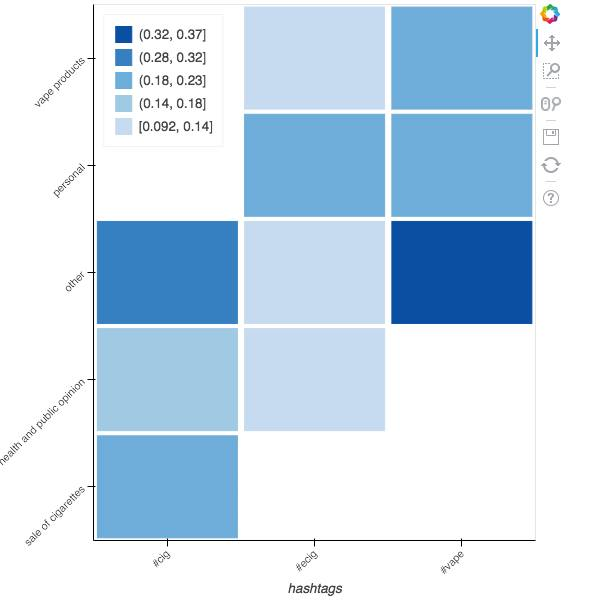

Welcome!
What is the difference between people who talk about cigarettes, vapes, and Ecigs on Twitter? We've analyzed about 75,000 tweets from users who use the hashtags #Ecigs, #cigarettes, and #vape to find out. The journey began when we:
- Crawled twitter for Tweets containing the termss #Ecigs, #cigarettes, and #vape
- Took every user handle that was present in the collected tweets, and collected each and every single one of their posts to understand their habits and popularity.
- Analyzed these users and copared them on the following attributes:
- Number of followers
- Statuses count
- Retweet count
What did we approach this experiment expecting to find?
